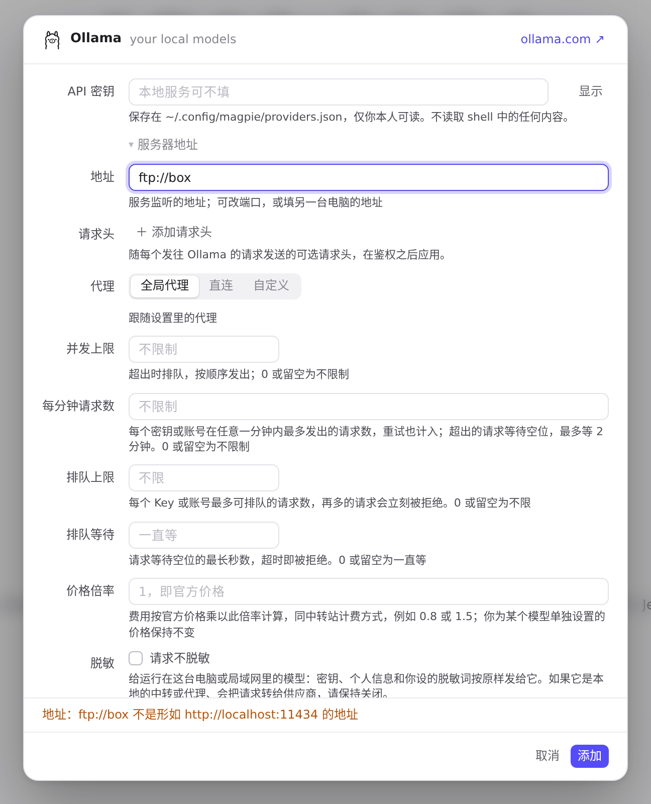
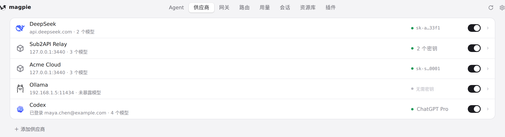

#1165 界面预览
commit 1c88b84 · 回到 PR · 供应商编辑器里，本地预设（Ollama、LM Studio、oMLX）在密钥下方新增了默认折叠的「服务器地址」区块：填入端口或另一台电脑的地址后，终结点预览按新地址改写（各 API 保留自己的路径），地址不是地址时会展开并提示；LM Studio 与 oMLX 的说明文字也改成了「默认端口 1234/8000」。
红线是鼠标走过的轨迹，红色圆环是一次点击；底部文字是这一步在做什么。空格暂停，← → 逐段查看。
 本地预设的「服务器地址」与无效地址提示 · 添加面板里的预设
本地预设的「服务器地址」与无效地址提示 · 添加面板里的预设
 本地预设的「服务器地址」与无效地址提示 · 本地预设的编辑器：密钥下方的「服务器地址」
本地预设的「服务器地址」与无效地址提示 · 本地预设的编辑器：密钥下方的「服务器地址」
 本地预设的「服务器地址」与无效地址提示 · 本地预设的编辑器：密钥下方的「服务器地址」
本地预设的「服务器地址」与无效地址提示 · 本地预设的编辑器：密钥下方的「服务器地址」
 本地预设的「服务器地址」与无效地址提示 · 展开后的地址输入框与终结点预览
本地预设的「服务器地址」与无效地址提示 · 展开后的地址输入框与终结点预览

本地预设的「服务器地址」与无效地址提示 · 点「添加」后的编辑器
 改到另一台电脑的地址后添加并重新打开 · 填入地址后的编辑器与终结点预览
改到另一台电脑的地址后添加并重新打开 · 填入地址后的编辑器与终结点预览

改到另一台电脑的地址后添加并重新打开 · 添加完成后的供应商列表
 改到另一台电脑的地址后添加并重新打开 · 重新打开时的「服务器地址」
改到另一台电脑的地址后添加并重新打开 · 重新打开时的「服务器地址」